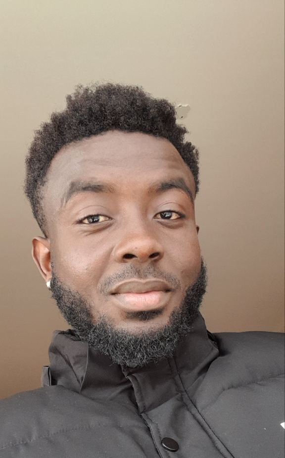

Ahmed Farakhan AMEYAW

Summary
Experienced graphic designer with a passion for creativity and visual communication. Specialized in Adobe
Photoshop, illustration, or UI/UX design. Proven track record of delivering impactful designs
that captivate audiences and drive business results. Adept at collaborating with clients and cross-functional
teams to bring ideas to life. Committed to staying updated with the latest design trends and technologies.
Seeking new opportunities to apply my skills and contribute to innovative projects.
Education
- Dormaa Ahenkro St Johns International Primary (2006-2009), Ghana.
- Dormaa Ahenkro Senior High School (2009-2013), Ghana.
- International Business Management - St Petersburg State University, Russia.
Work Experience
-
Customer Attendant - SCSI Computer Systemz.
June 2013 - December 2017
- Attending to customers
- Resolving customer complaints
- Graphic design
- Video editing
Skills
- Adobe Photoshop
- Video Editing
- Web Development